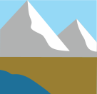
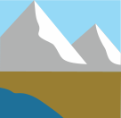

Renifer tundrowy
Renifer tundrowy
(Rangifer tarandus)
Narażone
Wielkość populacji na wolności: 1 500 000
Renifer tundrowy (Rangifer tarandus) to gatunek zwierząt kopytnych zamieszkujący Arktykę i tereny subarktyczne w Kanadzie, Stanach Zjednoczonych (na Alasce), Rosji, Norwegii, Finlandii oraz Grenlandii. Wygląd poszczególnych reniferów
może się różnić w zależności od miejsca pochodzenia oraz od pory roku. Ogólnie mają one jednak brązowo-białe umaszczenie oraz białą przednią i spodnią część pyska, często z ciemniejszym ubarwieniem nozdrzy. Mają też duże, rozgałęzione rogi
pokryte brązową aksamitną sierścią. Samce osiągają długość od 1,8 do 2,1 m i ważą od 159 do 182 kg. Samice mają od 1,6 do 2,05 m długości i ważą od 80 do 120 kg.
Liczebność i zasięg terytorialny reniferów są wprawdzie dość duże, jednak
jest to gatunek uznany za narażony ze względu na 40-procentowy spadek liczebności populacji, który nastąpił w ciągu ostatnich 25 lat. Niektóre podgatunki są szczególnie narażone. Przykładem mogą być renifery kanadyjskie (Rangifer tarandus
caribou), które utraciły dużą część siedlisk w wyniku zagospodarowania terenu przez ludzi, a także renifery małe (Rangifer tarandus peary), u których zaobserwowano załamania liczebności populacji spowodowane głodem w związku z ostrymi zimami
na zamieszkiwanych przez nie obszarach arktycznych. Poszczególne populacje reniferów na wielu terenach są śledzone i monitorowane pod kątem zagrożeń. Wprowadzane są również ograniczenia zmierzające do zrównoważonej kontroli polowań na te zwierzęta.
| Kontynenty | Regiony | Biomy |
|---|---|---|
| Europa, Ameryka Północna, Azja |
Rosja (Syberia), Kanada, Stany Zjednoczone (Alaska), Norwegia, Dania, Finlandia, Grenlandia |
   |

| Wielkość grupy (bez młodych osobników) | 3-12 (maks. 1 samiec, samice do 11) |
|---|---|
| Wielkość grupy kawalerskiej samców (bez młodych osobników) | 3-12 |
| Wielkość grupy kawalerskiej samic (bez młodych osobników) | 3-12 |
| Hierarchia dominacji | 1 samiec dominujący w grupie rozrodczej |
| Strategia rozrodcza | Poligynia |
| Zasady dotyczące dojrzałości | Matrylinearność: dojrzałe samce spokrewnione z osobnikiem alfa stają się wyrzutkami |
| Stosunek do człowieka | Neutralność |
| Wielkość |
 1,35 m wysokości w kłębie 1,35 m wysokości w kłębie  1,18 m wysokości w kłębie 1,18 m wysokości w kłębie |
|---|---|
| Długość życia |
17 lat 17 lat |
| Waga |
170 kg 100 kg |
| Wiek dojrzałości płciowej | 5 lat |
|---|---|
| Wiek zakończenia okresu reprodukcyjnego | Śmierć |
| Liczba młodych przypadająca na okres godowy | 1 |
| Długość ciąży/inkubacji | 8 mies. |
| Okres międzyurodzeniowy | 12 mies. |
| Rozmnażanie w niewoli | Łatwe |
Potrzeby społeczne
Renifery to towarzyskie zwierzęta stadne, które na wolności żyją w grupach rozrodczych złożonych ze spokrewnionych ze sobą samic, ich młodych oraz jednego niespokrewnionego z nimi samca dominującego, albo też w stadach młodych samców-kawalerów, którzy nie zgromadzili jeszcze haremu samic.
Rozmnażanie
Dominujące samce renifera tundrowego zdobywają i utrzymują terytorium, walcząc o nie oraz o dostęp do samic z innymi samcami. Gdy grupa spokrewnionych ze sobą samic wraz z potomstwem zaczyna żerować na terytorium danego samca, ten dołącza do nich i parzy się z gotowymi do rozrodu samicami. Po 7-8 miesiącach samica rodzi jedno cielę, które do 3. miesiąca życia jest karmione mlekiem matki, a dojrzałość płciową osiąga w wieku 5 lat. Jednak dojrzałe renifery nie rozmnażają się zwykle, zanim nie osiągną bardziej zaawansowanego wieku. Samica pozostaje w grupie matki i najczęściej rodzi swoje pierwsze ciele w wieku około 5 lat, natomiast samce zostają zmuszone do opuszczenia rodziny i dołączenia do stada złożonego z innych młodych samców. Po kilku kolejnych latach samiec może zostać samcem dominującym w swoim stadzie kawalerów (w wieku około 8 lat) i wtedy również opuszcza stado, aby ustanowić własne terytorium i zdobyć własne stado samic.
Ciekawostki
- Wyróżniamy 12 żyjących i 2 wymarłe podgatunki renifera. Poszczególne podgatunki żyją na różnych obszarach geograficznych i w różnych środowiskach, w związku z czym różnią się też wyglądem.
- Renifery północnoamerykańskie (karibu) migrują na największe spośród wszystkich ssaków lądowych odległości rzędu 5000 km.
- Renifer tundrowy to jedyny gatunek wśród jeleniowatych, u którego rogi mają zarówno samce, jak i samice (choć u niektórych podgatunków samice utraciły poroże).
- Renifery tundrowe co roku zrzucają poroże, aby mogły im urosnąć nowe rogi. Samce zrzucają poroże, gdy kończy się okres godowy, a samice - po urodzeniu młodych.
- Największe poroże występuje u najbardziej dojrzałych, dominujących samców renifera tundrowego.